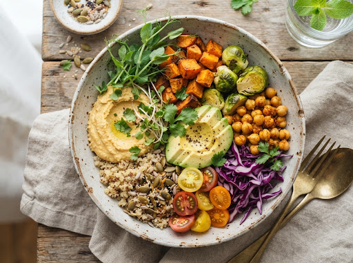
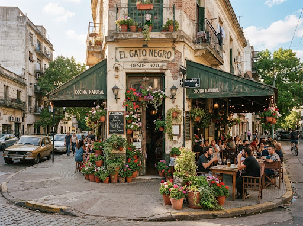
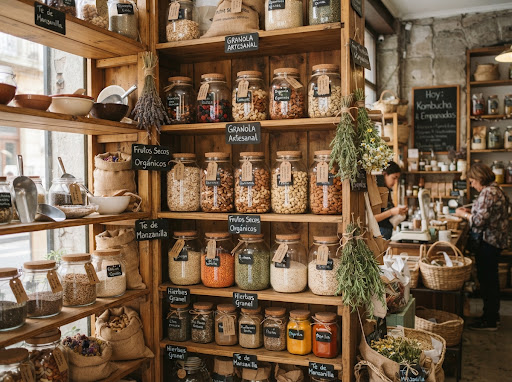

Cocina natural en la esquina de siempre.
Desde nuestra histórica esquina sobre Gurruchaga, cocinamos todos los días con ingredientes frescos de la huerta, harinas agroecológicas y recetas nobles que nutren el cuerpo y el alma.

Ingredientes de estación
Huerta agroecológica, legumbres seleccionadas y vegetales frescos cosechados en su punto óptimo de madurez.
Opciones veganas & sin TACC
Platos abundantes pensados para todos los estilos de vida, libres de ultraprocesados y con opciones aptas celíacos.
Almacén a granel
Frutos secos, granolas horneadas a diario, harinas molidas y especias puras para llevar la cocina consciente a tu casa.
El Almacén Natural
Elegí los productos que querés sumar a tu pedido o consulta. Marcá las casillas y envianos la lista a WhatsApp con un solo clic.
Seleccionaste 0 productos


Más de cuatro décadas respirando aire de barrio en Gurruchaga 1630.
Nacimos con la convicción de que comer bien es un acto de respeto hacia la tierra y hacia nosotros mismos. Cuando en Buenos Aires casi nadie hablaba de alimentos agroecológicos o harinas integrales de grano entero, nuestras puertas ya abrían cada mañana aromatizadas por panes recién horneados y caldos de hierbas silvestres.
Hoy seguimos honrando esa misma esquina: un punto de encuentro para vecinos, trabajadores de la zona y buscadores de vitalidad que eligen frenar un momento, conversar y alimentarse con propósito.
Palabras de quienes nos visitan
«El bowl de quinoa y el hummus de La Esquina son una salvación semanal. Se nota el amor y el respeto por cada ingrediente fresco.»
«Un remanso de paz en Villa Crespo. Venir a tomar una kombucha fría en la vereda de Gurruchaga te cambia el día por completo.»
«El almacén tiene las mejores harinas integrales y frutos secos de toda la zona. La calidez del equipo te hace sentir en casa.»
Te esperamos en el barrio
Gurruchaga 1630
Villa Crespo, CABA, ArgentinaTodos los días
10:00 a 18:30 hs (cocina y almacén continuado)+54 11 4832-8528
Llamadas o mensajes durante el horario de atención¿Tenés alguna consulta o querés encargar con anticipación?
Escribinos por WhatsApp para consultar la tarta del día, reservar mesa en el patio o apartar productos a granel antes de venir.